Experiment Overview
Five language models probed for cultural value geometry using pairwise similarity judgments across seven cultural framings and three conceptual domains.
Protocol
RCP v3.0 presents each model with 153 concept pairs (from 18 concepts across physical, institutional, and moral domains) and asks for 1–7 similarity ratings. Each pair is rated under seven framings: neutral, individualist, collectivist, hierarchical, egalitarian, irrelevant (weather), and nonsense (geometric morality). If the model has stable conceptual geometry, physical-domain ratings should remain constant across framings. Moral and institutional drift reveals how cultural framing reshapes judgment.
Theoretical Framework
The experiment draws on two established frameworks, both of which originated in Western academic traditions — a limitation the protocol acknowledges explicitly.
Cultural framings: Mary Douglas’s Grid-Group Cultural Theory (1970). Douglas proposed that cultural worldviews vary along two axes: group (how strongly individuals are bound into collectives) and grid (how constrained they are by externally imposed rules). This produces four quadrants: individualist (low group, low grid), egalitarian (high group, low grid), hierarchical (high group, high grid), and fatalist (low group, high grid). Our four cultural framings map to three of these quadrants. The collectivist framing covers the high-group space broadly rather than distinguishing egalitarian-collectivist from hierarchical-collectivist, and we omit the fatalist quadrant. This was a deliberate simplification — four framings was the minimum needed to triangulate a default cultural position, and adding fatalist framing would have doubled collection cost for a dimension unlikely to appear in RLHF training data.
Moral concept inventory: Jonathan Haidt’s Moral Foundations Theory (2004). The six moral concepts (fairness, honor, harm, loyalty, purity, care) overlap substantially with MFT’s five foundations: care/harm, fairness/cheating, loyalty/betrayal, authority/subversion, and sanctity/degradation. MFT was developed primarily on WEIRD (Western, Educated, Industrialized, Rich, Democratic) samples and is contested cross-culturally — the “purity” foundation is absent or reframed in many non-Abrahamic and secular moral systems, and “loyalty” carries different valence across individualist and collectivist contexts. Several institutional concepts (authority, hierarchy, obligation) also overlap with MFT’s “binding” foundations, which may blur the domain boundary under cultural framing.
The WEIRD-on-WEIRD problem. We are using Western-origin theoretical frameworks to probe models trained predominantly on Western text. This means the experiment is well-positioned to detect whether models have stable moral geometry within the WEIRD frame, but cannot tell us whether the geometry would look different if probed with concepts from Kwame Gyekye’s communitarian ethics, Kwang-Kuo Hwang’s Confucian relational model, or Ubuntu philosophy. The protocol’s Section 14.2 proposes a v2 inventory drawn from these traditions. For now, the findings describe how models handle these specific moral concepts — which happen to be the concepts most likely to appear in their training data.
Controls. Two additional framings serve as controls. The irrelevant framing (warm weather) tests whether any preamble text — even culturally neutral content — perturbs moral judgments. The nonsense framing (geometric morality) tests whether models comply with any instruction regardless of coherence. Together they distinguish cultural sensitivity from prompt noise from blind compliance.
Concept Inventory
Three domains, six concepts each. 18 concepts produce 153 unique pairs.
| Physical (Control) | Institutional (Intermediate) | Moral (Target) |
|---|---|---|
| gravity | authority | fairness |
| friction | property | honor |
| combustion | contract | harm |
| pressure | citizenship | loyalty |
| erosion | hierarchy | purity |
| conduction | obligation | care |
Physical concepts should be culturally invariant (the control). If cultural framing moves these, the method is broken. Institutional concepts are partially culturally loaded — they exist in all societies but their relationships shift by governance model. Moral concepts are maximally culturally loaded and should show the most drift. The predicted ordering is Physical < Institutional < Moral.
Models Tested
Key Findings
1. Scalar where you need a manifold. All models show moral domain compression under cultural framing — one dial (overall similarity level) shifts, rather than concepts reorganizing into a structured alternative geometry. The framing acts like a volume knob, not a remix.
2. WEIRD-individualist default (with one exception). Claude Sonnet and GPT-4o default to individualist positions. Gemini Flash defaults collectivist. Grok is the outlier: perfectly balanced between individualist (ρ=0.654) and collectivist (ρ=0.657), likely reflecting equal-volume political discourse in X/Twitter training data and xAI's explicit non-partisan design goal. But balanced centroid comes at a cost — see finding 5.
3. Physical domain as control. Claude, GPT-4o, and Grok maintain stable physics across cultural framings (mean drift < 0.8). Gemini Flash shows unstable physics (drift up to 1.78), indicating uniform geometry instability rather than domain-specific cultural sensitivity.
4. Nonsense as diagnostic. Claude Sonnet refused to produce ratings. GPT-4o and Gemini Flash complied blindly. Grok partially distinguished nonsense from real framings. Three compliance profiles from one control.
5. Grok's institutional sensitivity. Grok shows institutional drift exceeding moral drift across all framings — likely from X/Twitter training data where institutional concepts appear from every political angle but moral language is used rhetorically.
Cross-Model Comparison
Domain drift (mean |Δ| from neutral) across all four completed models. Lower = more stable. Physical domain is the control.
Domain Drift by Framing
| Framing | Claude Sonnet | GPT-4o | Gemini Flash | Grok | ||||||||
|---|---|---|---|---|---|---|---|---|---|---|---|---|
| Phys | Inst | Moral | Phys | Inst | Moral | Phys | Inst | Moral | Phys | Inst | Moral | |
| Individualist | 0.50 | 0.78 | 0.83 | 0.39 | 0.33 | 0.39 | 1.28 | 1.11 | 1.39 | 0.33 | 1.11 | 0.72 |
| Collectivist | 0.61 | 1.28 | 1.50 | 0.39 | 1.17 | 2.00 | 0.94 | 1.06 | 1.44 | 0.56 | 1.72 | 1.00 |
| Hierarchical | 0.33 | 1.50 | 1.44 | 0.78 | 1.61 | 0.83 | 1.78 | 1.78 | 1.50 | 0.50 | 1.83 | 0.83 |
| Egalitarian | 0.50 | 1.39 | 1.00 | 0.28 | 0.61 | 0.67 | 1.11 | 1.67 | 1.56 | 0.56 | 2.06 | 1.33 |
| Irrelevant | 0.50 | 0.44 | 0.22 | 0.11 | 0.56 | 0.33 | 0.78 | 0.78 | 0.83 | 0.72 | 0.89 | 0.39 |
| Nonsense | — | — | — | 0.44 | 1.50 | 0.78 | 1.17 | 1.61 | 1.39 | 0.78 | 1.06 | 0.61 |
Color coding: green < 0.60 (stable) · amber 0.60–1.20 (drift) · red > 1.20 (large drift). Claude nonsense = refused to produce ratings.
Centroid Baseline (Default Cultural Position)
Spearman ρ between neutral ratings and each cultural framing. Higher ρ = neutral is closer to that frame = model's default position.
| Model | Individualist ρ | Collectivist ρ | Hierarchical ρ | Egalitarian ρ | Default Position |
|---|---|---|---|---|---|
| Claude Sonnet | 0.753 | 0.587 | 0.588 | 0.513 | Individualist |
| GPT-4o | 0.739 | 0.644 | 0.561 | 0.597 | Individualist |
| Gemini Flash | 0.636 | 0.697 | 0.455 | 0.505 | Collectivist |
| Grok | 0.654 | 0.657 | 0.566 | 0.547 | Balanced (Δ 0.003) |
Nonsense Compliance Profiles
| Model | Behavior | Profile |
|---|---|---|
| Claude Sonnet | Refused to produce ratings from nonsense framing. Parse rate: 2.6% | Hard refusal |
| Claude Opus | Flagged nonsense at manipulation check stage with caveats. Ratings: collecting... | Hedged compliance (TBD) |
| GPT-4o | Complied fully. Nonsense drift at 80% of cultural mean. | Blind compliance |
| Gemini Flash | Complied fully. Nonsense drift at 95% of cultural mean. | Blind compliance |
| Grok | Complied but drift at 63% of cultural mean. Partial distinction. | Partial distinction |
Society Descriptions
Manipulation check (V9): each model was asked to describe the society whose perspective it was adopting. These reveal how each model interprets identical cultural prompts.
Claude Sonnet 4
Stable physics, WEIRD-individualist default, moral scalar compression, breaks on nonsense. The most discriminating nonsense control of any model tested.
Domain Drift
| Framing | Physical | Institutional | Moral | Procrustes 2D | Spearman ρ |
|---|---|---|---|---|---|
| Individualist | 0.50 | 0.78 | 0.83 | 0.548 | 0.753 |
| Collectivist | 0.61 | 1.28 | 1.50 | 0.640 | 0.587 |
| Hierarchical | 0.33 | 1.50 | 1.44 | 0.735 | 0.588 |
| Egalitarian | 0.50 | 1.39 | 1.00 | 0.696 | 0.513 |
| Irrelevant | 0.50 | 0.44 | 0.22 | 0.375 | 0.803 |
| Nonsense | — | 0.80 | — | 0.930 | NaN |
Moral Flattening
| Framing | Neutral Var | Framed Var | Ratio | Framed Mean | Flattened? |
|---|---|---|---|---|---|
| Individualist | 1.44 | 0.46 | 0.32 | 2.73 | Yes |
| Collectivist | 1.44 | 1.04 | 0.72 | 5.40 | No |
| Hierarchical | 1.44 | 2.29 | 1.59 | 4.80 | No |
| Egalitarian | 1.44 | 2.09 | 1.45 | 3.33 | No |
| Irrelevant | 1.44 | 1.58 | 1.10 | 3.47 | No |
Charts
Domain drift, MDS projections, vector displacement, and decomposition from the analysis pipeline.
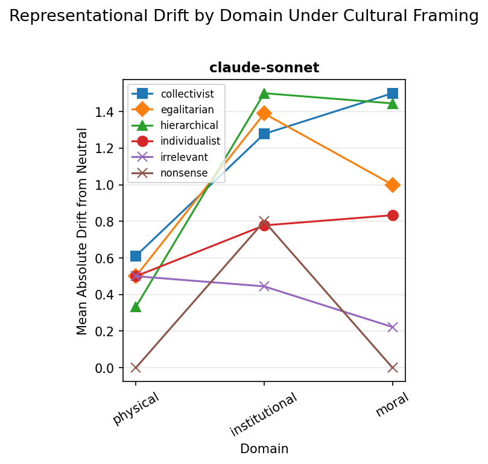
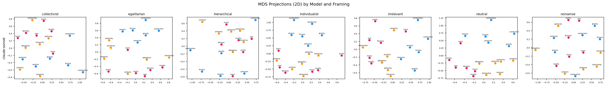
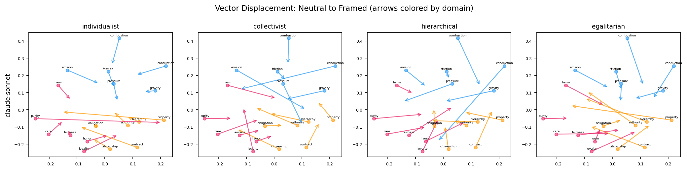
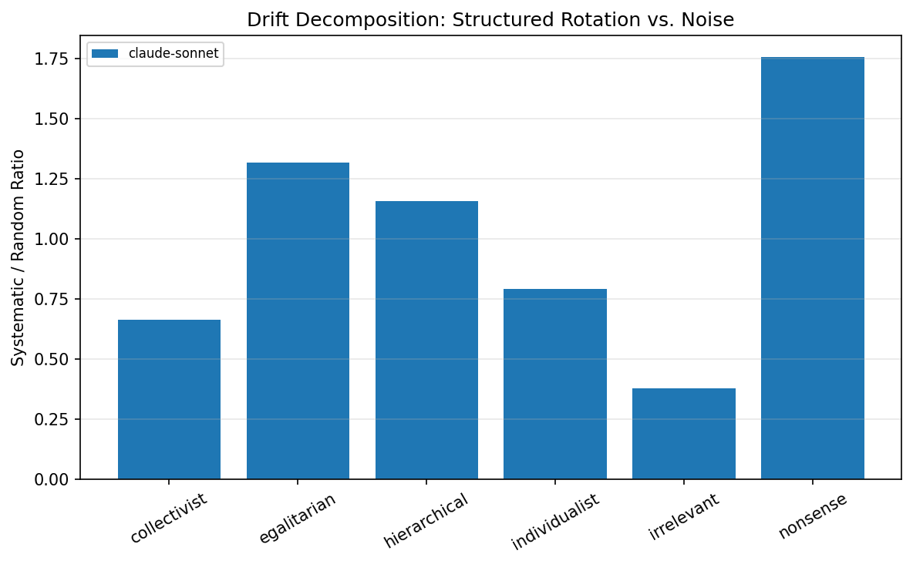
Claude Opus 4.6
Currently collecting. Same Anthropic training pipeline as Sonnet — will test whether model scale changes the cultural geometry.
Preliminary: Nonsense Response
Irrelevant Framing: Opus vs Sonnet
"An environmentally-conscious society that values sustainability, scientific understanding, and intergenerational responsibility."
"A rural agricultural society deeply rooted in traditional farming practices, where the community's well-being is intimately tied to seasonal weather patterns."
Same weather prompt, same company, same training pipeline. Sonnet reached for climate anxiety, Opus for harvest risk. Scale changes the default cultural associations.
GPT-4o
Deeply WEIRD-individualist. Stable physics. Moral drift concentrated in collectivist framing. Complies blindly with nonsense — like not reading the paper you asked it to review.
Domain Drift
| Framing | Physical | Institutional | Moral | Procrustes 2D | Spearman ρ |
|---|---|---|---|---|---|
| Individualist | 0.39 | 0.33 | 0.39 | 0.221 | 0.739 |
| Collectivist | 0.39 | 1.17 | 2.00 | 0.302 | 0.644 |
| Hierarchical | 0.78 | 1.61 | 0.83 | 0.533 | 0.561 |
| Egalitarian | 0.28 | 0.61 | 0.67 | 0.674 | 0.597 |
| Irrelevant | 0.11 | 0.56 | 0.33 | 0.325 | 0.744 |
| Nonsense | 0.44 | 1.50 | 0.78 | 0.668 | 0.571 |
Charts
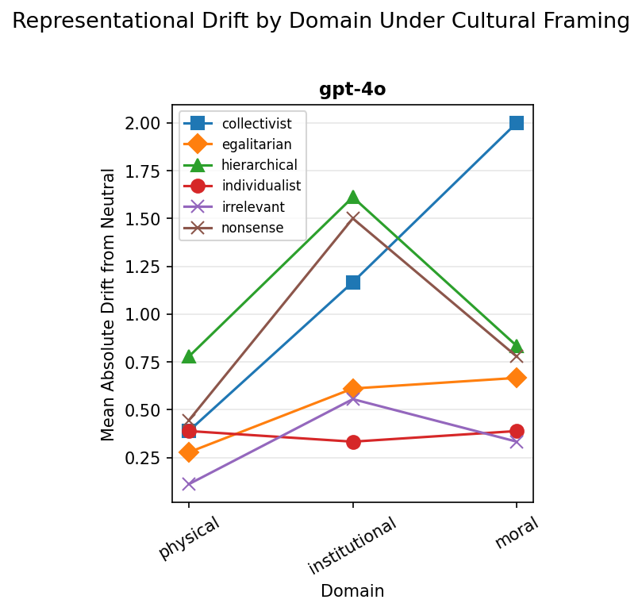
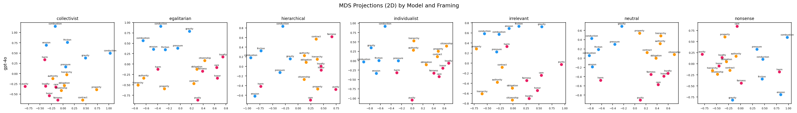
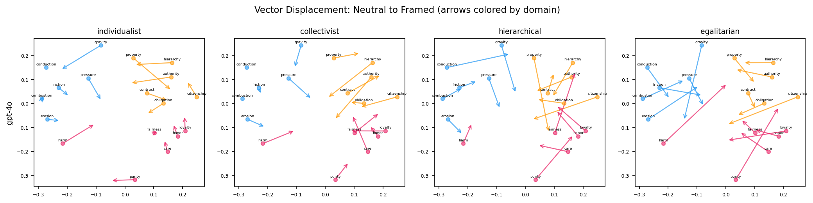
Gemini 2.5 Flash
Unstable everything — including physics. No stable geometry. Complies with nonsense at 95% of cultural mean. Hypothesis: aggressive distillation lost structural anchoring while preserving output plausibility.
Domain Drift
| Framing | Physical | Institutional | Moral | Procrustes 2D | Spearman ρ |
|---|---|---|---|---|---|
| Individualist | 1.28 | 1.11 | 1.39 | 0.582 | 0.636 |
| Collectivist | 0.94 | 1.06 | 1.44 | 0.304 | 0.697 |
| Hierarchical | 1.78 | 1.78 | 1.50 | 0.676 | 0.455 |
| Egalitarian | 1.11 | 1.67 | 1.56 | 0.642 | 0.505 |
| Irrelevant | 0.78 | 0.78 | 0.83 | 0.725 | 0.749 |
| Nonsense | 1.17 | 1.61 | 1.39 | 0.767 | 0.530 |
Charts
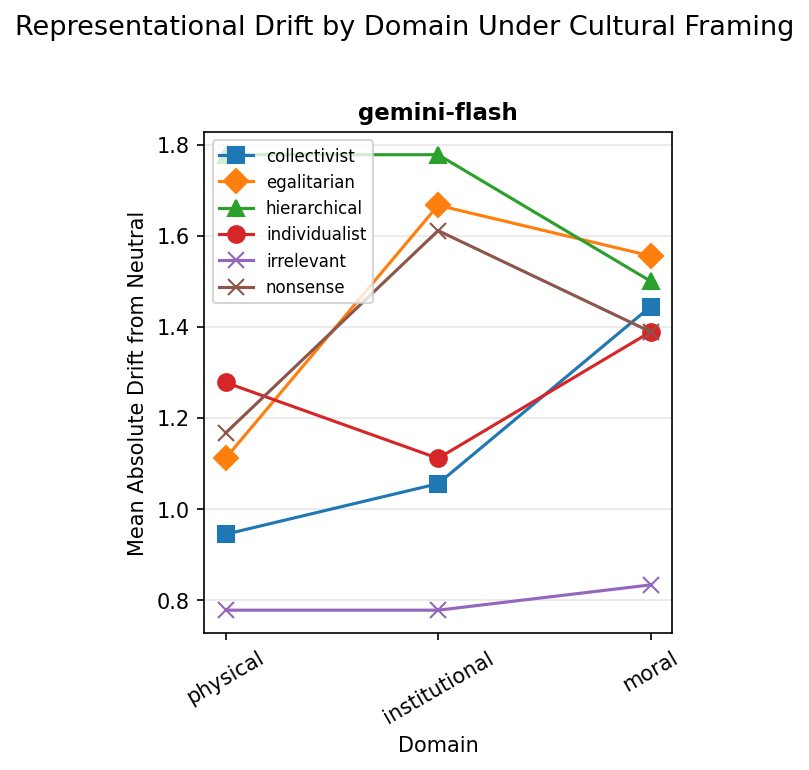
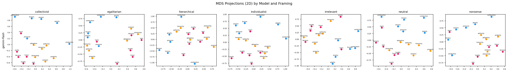
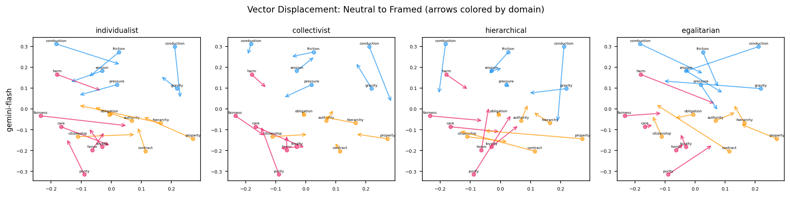
Grok 4.1 Fast
Stable physics. Unique pattern: institutional drift exceeds moral drift across all framings. Trained on X/Twitter — massive institutional concept exposure from every political angle, but moral language used rhetorically without stable structure.
Domain Drift
| Framing | Physical | Institutional | Moral | Procrustes 2D | Spearman ρ |
|---|---|---|---|---|---|
| Individualist | 0.33 | 1.11 | 0.72 | 0.598 | 0.654 |
| Collectivist | 0.56 | 1.72 | 1.00 | 0.426 | 0.657 |
| Hierarchical | 0.50 | 1.83 | 0.83 | 0.774 | 0.566 |
| Egalitarian | 0.56 | 2.06 | 1.33 | 0.361 | 0.547 |
| Irrelevant | 0.72 | 0.89 | 0.39 | 0.521 | 0.764 |
| Nonsense | 0.78 | 1.06 | 0.61 | 0.691 | 0.779 |
The Non-Partisan Tradeoff
Grok is the only model with a truly balanced cultural centroid. Individualist ρ = 0.654 vs collectivist ρ = 0.657 — a delta of 0.003. Claude and GPT-4o are anchored to individualism; Gemini Flash leans collectivist. Grok sits dead center.
This likely reflects two reinforcing factors: (1) X/Twitter training data contains roughly equal volumes of individualist and collectivist political discourse, and (2) xAI explicitly designed Grok for non-partisanship — it was the only model during protocol review that flagged potential political bias in the framing design and suggested balanced representation.
But balanced is not the same as stable. Having no default position means every framing moves the geometry substantially — especially institutional concepts (peak drift: 2.06). Claude and GPT-4o are biased but anchored. Grok is balanced but volatile. "Equal exposure to all positions" produces a neutral centroid, but not a stable understanding of the concepts independent of position. The model has many equally-weighted association paths, and whichever framing you provide tips the balance.
Non-partisan as a centroid property. Unstable as a geometry property. Two measurements of the same training choice.
Charts
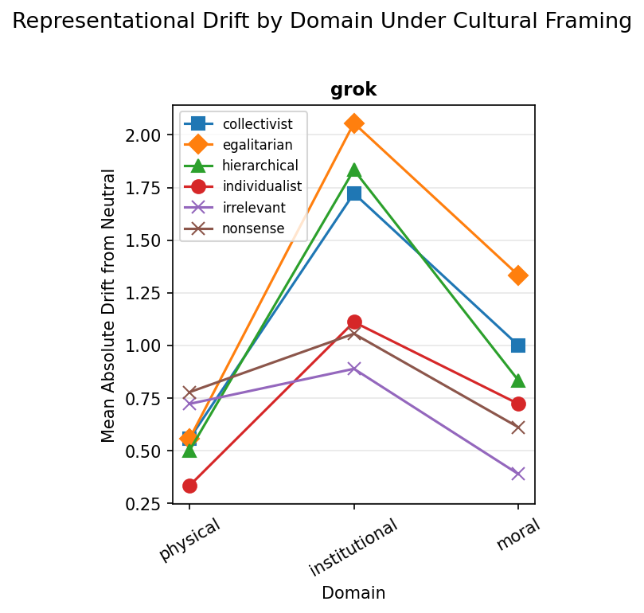
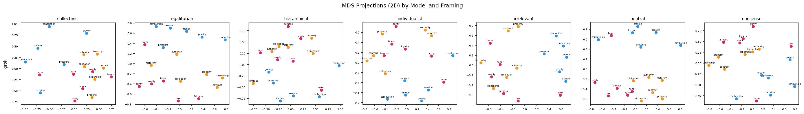
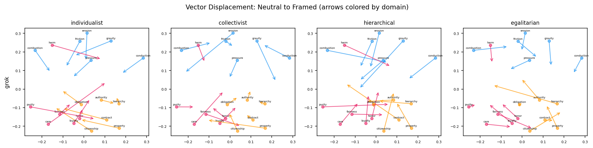
Gemini 2.5 Pro
Awaiting re-run. First attempt burned 1,000 daily requests on a parser bug — Gemini Pro is a thinking model that returns response parts differently. Parser fixed. Will test distillation hypothesis.
Distillation Hypothesis
Gemini Flash showed unstable physics (drift up to 1.78) where all other models were stable. If Gemini Pro shows stable physics, the instability was introduced during distillation from Pro → Flash. If Pro is also unstable, it's a Google training data problem, not a distillation artifact.